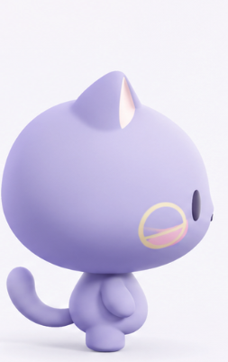

값을 조정하면 실제 모델을 다시 렌더링합니다. “원래대로”로 초기화할 수 있으며, 정면 머리 형상은 바뀌지 않습니다.
준비 중...
설명: 정면의 금색 고리 = 별빛냥 고유 눈, 옆모습의 금색 고리 = 볼 장식, 검은 타원 = 앞쪽 측면 눈입니다. 정확한 3D 한 메시를 회전하되 카메라 방향에 맞춰 UV 표현을 부드럽게 보정합니다. 이는 정면/측면의 서로 다른 외형 요구를 만족하기 위한 선택적 만화식 보정입니다.
기준 이미지와 정확한 90° 비교
첨부된 목표 측면 이미지

정면은 변경하지 않고, 검은 세로 눈·코·볼 장식의 간격 참고
기존 Three.js · 90°
기존 측면 보정 없이 한 눈 / 코끝
수정 Three.js · 90°
금색 볼 고리 + 검은 측면 눈